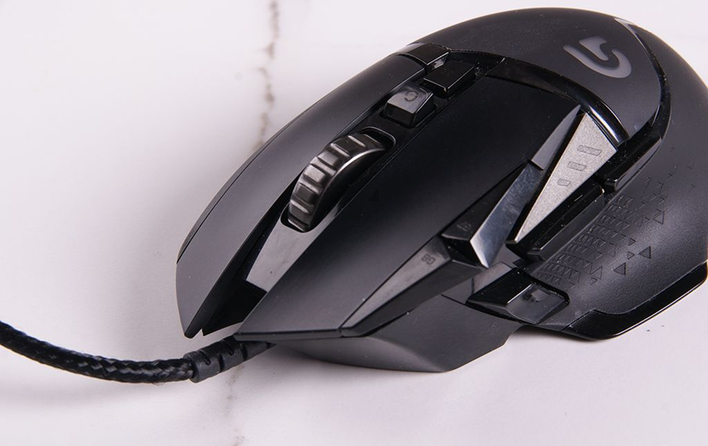

Вказівний пристрій - пристрій для введення даних (вид human interface device), що дозволяє користувачу введення просторових (неперервних та багатовимірних) даних в комп'ютер. CAD системи і графічний інтерфейс користувача (GUI) дозволяють користувачу керувати комп'ютером і забезпечувати його даними, використовуючи фізичні рухи - вказування, натискання і перетягування - наприклад, рухаючи мишу по поверхні стільниці і натискаючи її кнопки. Рух вказівного пристрою відбивається на екрані рухом курсора та іншими візуальними змінами. Подібні графічні маніпулятори з'явилися водночас з електронними дисплеями радіолокаторів, їх прототипом була ручка керування літаком. Зараз найбільш вживаним вказівним пристроєм є миша, хоча існує також велике різноманіття джойстиків, трекболів, сенсорних екранів тощо. Перспективою вдосконалення є масове поширення нейрокомп'ютерного інтерфейсу.